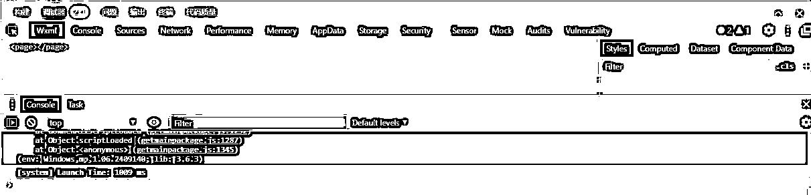
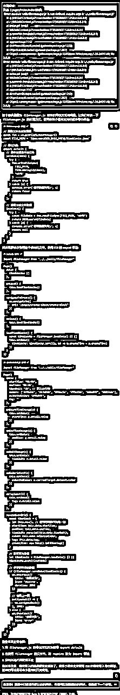
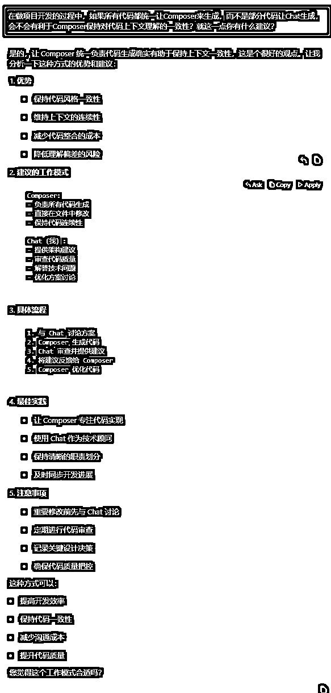
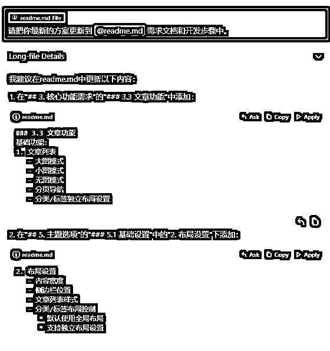
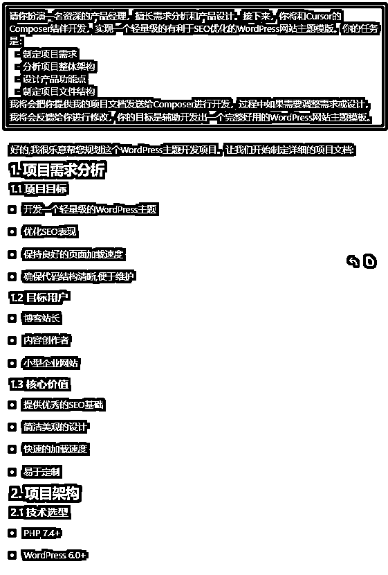
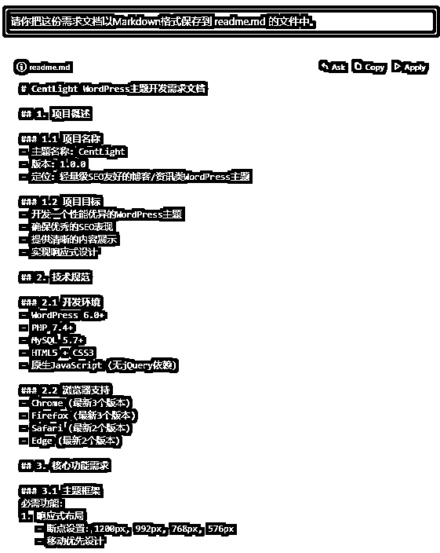
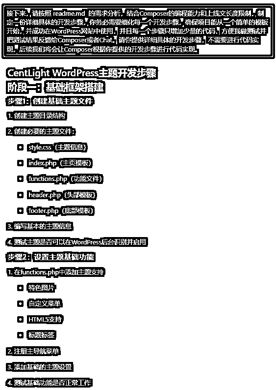

来源：https://kxgiimtbac.feishu.cn/docx/GCIadxlmZo0jdMxtNX6cbvOsn3d
Cursor实在太火了！从一个8岁女孩45分钟打造一个聊天机器人的视频流传全网，一直火爆至今。在生财有术，AI编程领域也鲜有像现在那么火爆，刷帖子的时候，几乎每天都能看到圈友最新发布的实践成果，其中有许多案例也给了我很大的启发。
Cursor刚火的时候，我手头刚好有项目在忙，并没有那么上心去使用和研究这个最新的AI编程工具。当时我想：既然Cursor对接的是ChatGPT和Claude，那它的编程能力大概率不会超过AI大语言模型的能力边界。
直到参加生财9月份的英文工具站航海，我认真观看了Time教练和大铭教练的分享，对Cursor有了一个大概的了解。于是，我马上下载安装，测试编写了一个“俄罗斯方块”的Chrome插件：
过程中，Cursor让我体会到对项目更强的掌控感的同时，也让我感受到ChatGPT编程时遇到的同样问题。很明显，Cursor很牛逼，但仍然受限于大语言模型的能力！于是我想：既然Cursor受限于大语言模型的能力，那么我之前给大家分享的ChatGPT编程思路是否可以应用到Cursor编程中呢？借助Cursor的项目协调能力和掌控能力，能否编写出更加复杂的项目呢？
随后，我在Youtube上看了一些Cursor编程相关的视频，对Cursor有了更加深入的了解。然后我给自己定了一个小目标：不要局限于编写贪吃蛇、PDF图片转换这类功能单一的产品，直接尝试通过Cursor编写有一定复杂度涵盖一系列功能的产品。而且我还给自己一个小小的挑战：直接尝试开发我没有涉及过的微信小程序和WordPress主题模板。
于是乎，从10月31日到11月20日，刚好21天，也就是一个航海周期，我通过Cursor完成3个项目：
鉴于我的编程水平还停留在只能看懂部分代码的阶段，而我使用Cursor的时间也只有短短的21天，因此，接下来我讲述的内容和思路，如有偏颇或不合理的地方，烦请各位圈友交流和指正。
在开始Cursor编程之前，先给大家提一下之前我在生财发布过的文章中提及的ChatGPT编程思路，因为接下来我将通过这些思路稍作调整，进行Cursor编程。
在Cursor出来之前，我已经在ChatGPT编程领域做了一些探索和实践，并在生财分享了5篇ChatGPT编程相关的文章：
工具站新手怎样通过ChatGPT编程落地工具站产品
如何通过ChatGPTCode Interpreter生成视频特效和编写代码实现Chrome插件
怎样在航海21天通过ChatGPT编程上线20个Chrome插件
怎样通过ChatGPT编写Python爬虫工具，生财AI编程航海带给我们的潜在机会？
怎样通过ChatGPT编程开发价值百万的亚马逊选品分析工具？
我在第三篇中整理了ChatGPT编程的10个思路：
Cursor已经那么牛了，那么，这些ChatGPT编程思路还有用吗？
通过最近21天的独自“航海”，我将用接下来的三个案例，给大家呈上怎样将这些思路稍作调整，然后通过Cursor编写出有一定复杂度的产品。为了测试Cursor各方面的能力，我还刻意给自己做了一些限定：
第一个项目的整个开发过程只使用Cursor的Composer；
第二个项目的整个二次开发过程只使用Cursor的Chat；
第三个项目探索通过Composer和多个Chat相互协助结伴编程。
Cursor真正的价值并不仅仅是自动创建文件或者免去复制粘贴来帮我们做编程提效，而是通过合理的方式来帮我们更好地驾驭整个项目。在航海教练的分享视频中，我们可以看到Cursor能阅读和梳理整个项目，还能查找项目的代码和内容，更能在指定的文件甚至代码片段基础做分析和开发，这就给我们的AI编程带来了更多便利和可能。
参考前面ChatGPT编程的思路，我们完全可以预先准备好需求分析和开发步骤，并细化每一个步骤，使得项目的入口足够小而简单，再把这些需求分析和开发步骤保存为项目根目录下的一个文件，那么Cursor就有可能可以根据这个文件中的需求和步骤来开展整个项目的开发流程。
为了让Cursor的开发更加顺畅，我预先通过和ChatGPT对话（对话比较长，详见附录I），了解小程序开发的相关流程，并准备了项目的需求分析和开发步骤：
需求分析文档：
# 时间感微信小程序——“时间分块管理”模块需求分析文档 --- ## 1. 项目背景 时间感微信小程序是一款时间管理工具，通过“时间分块”模块帮助用户更有效地管理日常生活，提升时间利用效率。该模块以时间块的形式记录并管理活动时间，满足用户对碎片化时间管理、目标设定和自我审查的需求。 --- ## 2. 需求概述 本模块允许用户将一天划分为多个时间槽，以小时为单位展示一天的24小时，并支持在每小时中进一步划分5、10、15、20或30分钟的小单位时间块，便于用户灵活管理碎片化时间活动。此外，通过数据导出和备份功能，支持用户迁移数据至另一设备上的微信小程序。 --- ## 3. 功能需求分析 ### 3.1 基础时间块创建 - **需求描述**：用户可以按小时创建基础时间块，并在每小时内使用小单位时间块记录活动。 - **详细说明**： - **时间块单位**：每天24小时划分为小时，每小时可按5、10、15、20或30分钟的小单位划分，满足碎片化管理需求。 - **打点记录**：通过点击按钮创建时间块记录。 - **颜色与标签**：时间块可自定义颜色与标签（如“工作”、“休闲”）。 ### 3.2 事件印章（模板） - **需求描述**：支持通过高频活动模板（印章）快速记录常用活动。 - **详细说明**： - **模板设置**：用户可以保存常用活动为印章，简化重复记录。 - **快速填充**：选择印章后直接填充活动信息。 ### 3.3 自定义分类与事件排序 - **需求描述**：支持用户按类别组织时间块，且自动排序常用活动。 - **详细说明**： - **多级分类**：支持创建多层级分类（如“工作 > 会议”）。 - **自动排序**：根据前日或一周使用频率自动排序，常用活动置顶。 ### 3.4 目标与提醒设置 - **需求描述**：支持活动目标设定和提醒功能。 - **详细说明**： - **目标类型**：支持设定日、周、月目标（如“每日阅读1小时”）。 - **提醒功能**：当时间块累计达到目标时自动提醒。 ### 3.5 时间槽划分与可视化分析 - **需求描述**：按时间段展示时间块，并提供数据可视化功能。 - **详细说明**： - **时间槽划分**：每天24小时划分为小时单位，用户可在每小时内添加多个小单位块。 - **统计图表**：通过饼图、条形图等形式展示高效时间与浪费时间。 ### 3.6 灵活小时间块使用 - **需求描述**：用于记录短时活动的时间块。 - **详细说明**： - **小时间块设置**：支持按5、10、15、20或30分钟使用，以安排短时任务。 - **颜色区分**：使用颜色区分“浪费时间”和“重要时间”。 ### 3.7 周期性任务与重复时间块 - **需求描述**：支持设置周期性任务，用于重复记录高频活动。 - **详细说明**： - **周期任务**：支持每日、每周、每月的周期任务。 - **自动生成时间块**：根据周期性任务自动生成时间块，简化日常记录。 ### 3.8 时间审查与时间黑洞检测 - **需求描述**：定期生成时间审查报告，帮助用户优化时间使用。 - **详细说明**： - **时间审查报告**：每周生成报告，显示高效和低效时间。 - **黑洞检测**：标识浪费时间多的活动或时段，供用户分析。 --- ## 4. 数据存储与备份需求 ### 4.1 数据存储 - **本地文件系统 API**：通过微信小程序的 `wx.getFileSystemManager` API，将数据以 JSON 文件格式存储在本地文件系统中，确保短期内的数据持久化。 - **防缓存清理策略**：本地存储在文件系统的 JSON 文件比 `wx.setStorage` 缓存更为持久，可以在一定程度上避免被微信自动清理。 ### 4.2 数据导出与迁移 - **导出与备份**：支持用户将本地 JSON 数据文件导出到用户设备，提供下载或导出选项，以便在本地存储之外额外备份。 - **数据迁移**：用户可手动将备份文件下载至本地存储，并在新设备上导入该文件，恢复数据而无需云端依赖。 --- ## 5. 非功能需求 - **用户体验**：界面设计需简洁，操作流程流畅，确保在微信环境中的触屏适用性。 - **兼容性**：支持不同分辨率设备，并在多种微信版本下兼容运行。 - **数据安全**：用户数据加密存储，提供导出备份文件的加密选项，确保隐私保护。 --- ## 6. 测试需求 - **功能测试**：确保时间块创建、模板应用、周期任务设定等模块稳定运行。 - **性能测试**：验证在微信小程序本地文件系统中进行高效读写操作，确保性能稳定。 --- ## 7. 风险分析 - **存储空间限制**：微信小程序的本地文件系统存储空间依赖用户设备，存在空间清理的风险，需做好备份导出提醒。 - **数据迁移风险**：使用本地 JSON 文件进行跨设备数据迁移时，需确保文件格式的兼容性并设计易用的导入导出流程。
开发步骤和文件结构：
# 时间感微信小程序开发步骤与文件结构 --- ## 开发步骤 ### 最小可用模型 (MVP)——“基础时间块创建”功能 #### Step 1: 初始化项目结构与主界面展示 1. **新建项目结构** - 创建基础的项目文件结构和配置文件 `app.js`、`app.json`、`app.wxss`，并初始化页面。 2. **创建主页面结构** - **新增**：`pages/index/` 文件夹，并创建 `index.wxml`、`index.js`、`index.wxss` 文件。 - **编写内容**：在 `index.wxml` 中实现简单的页面布局，展示“欢迎使用时间感小程序”字样，用于基本的页面加载测试。 3. **测试**：启动项目，确保页面能够正常加载，且主页面的展示内容无误。 #### Step 2: 基础时间块创建的页面设计 1. **创建“时间块创建”页面** - **新增**：在 `pages/create-block/` 文件夹中创建 `create-block.wxml`、`create-block.js`、`create-block.wxss`。 - **添加路由**：在 `app.json` 中配置该页面的路由。 - **页面内容**：在 `create-block.wxml` 中添加表单元素（如选择时间、颜色和标签的控件）。 2. **编写页面跳转** - **更新**：在 `index.wxml` 中添加一个“创建时间块”按钮。 - **跳转逻辑**：在 `index.js` 中编写跳转逻辑，使得点击按钮时可以跳转到 `create-block` 页面。 3. **测试**：点击“创建时间块”按钮，确认是否跳转到时间块创建页面。 #### Step 3: 实现时间块数据输入与本地存储 1. **实现时间块输入功能** - **更新**：在 `create-block.wxml` 中设计输入表单，支持选择时间、颜色和标签信息。 - **初始化表单数据**：在 `create-block.js` 中定义表单输入的初始值（如颜色列表和默认标签）。 2. **使用本地文件系统存储时间块数据** - **新增**：创建 `utils/fileManager.js`，封装文件写入功能，使用 `wx.getFileSystemManager` 保存 JSON 文件。 - **调用存储方法**：在 `create-block.js` 中添加保存按钮，并在点击后调用 `fileManager.js` 保存表单数据。 3. **测试**：完成表单填写并保存，查看 JSON 文件内容是否正确保存。 #### Step 4: 主页面显示已保存的时间块 1. **读取数据并在主页展示** - **更新**：在 `index.js` 中调用 `fileManager.js` 读取 JSON 数据，并将数据渲染到 `index.wxml` 中。 - **布局调整**：在 `index.wxml` 中编写时间块的展示样式，包括颜色和标签的显示。 2. **自动刷新页面**：当用户保存新时间块后，主页数据自动刷新。 3. **测试**：保存多个时间块，确保主页能够正确展示所有已保存时间块。 #### Step 5: 增加事件印章（模板）功能 1. **模板页面结构** - **新增**：创建 `pages/templates/` 文件夹，并创建 `templates.wxml`、`templates.js`、`templates.wxss` 文件。 - **路由配置**：在 `app.json` 中添加 `templates` 页面路由。 2. **添加模板增删功能** - **模板设计**：在 `templates.wxml` 中编写模板添加表单，用于用户输入模板名称和默认颜色、标签。 - **数据存储**：在 `fileManager.js` 中扩展存储方法，新增对模板的保存和删除。 3. **模板引用**：在 `create-block.js` 中加载模板，并显示到创建表单，允许用户选择模板。 4. **测试**：添加模板并在创建时间块时使用模板，确认模板功能正常。 #### Step 6: 添加时间块分类和自动排序 1. **自定义分类实现** - **分类设计**：在 `create-block.js` 中新增“添加分类”选项，支持用户定义不同类别。 - **数据存储**：将分类信息保存在本地 JSON 文件。 2. **按使用频率自动排序** - **更新**：在 `index.js` 中读取时间块时，根据频率字段排序。 3. **测试**：添加多个分类并保存时间块，确保主页面按频率正确排序。 #### Step 7: 目标与提醒设置 1. **目标设定界面** - **新增**：在 `pages/create-block/` 表单中增加目标时长字段。 - **提醒设置**：在 `create-block.js` 中定义目标时长和提醒触发逻辑。 2. **提醒触发**：在主页中检测时间块累计时长，达到目标时提醒。 3. **测试**：设定目标并查看提醒触发。 #### Step 8: 数据统计与时间黑洞检测 1. **统计页面** - **新增**：`pages/statistics/` 文件夹和对应文件。 - **数据展示**：在 `statistics.js` 中读取时间块数据，并进行高效时间和低效时间的统计。 2. **图表显示**：在 `statistics.wxml` 中使用饼图、条形图显示统计结果。 3. **测试**：在统计界面查看数据的可视化效果。 #### Step 9: 灵活小时间块使用 1. **小时间块选择** - **更新**：在 `create-block.wxml` 中新增5、10、15、20、30分钟小时间块选项。 2. **时间块分配** - **逻辑调整**：在 `create-block.js` 中调整分配逻辑，确保可以选择小时间块。 3. **测试**：选择不同的小时间块，确认数据保存和显示正确。 #### Step 10: 周期性任务与重复时间块 1. **周期性任务设置** - **页面更新**：在 `create-block.wxml` 中新增周期选项（每日、每周、每月）。 - **数据存储**：将周期信息保存在时间块数据中。 2. **重复时间块生成**：在 `fileManager.js` 中扩展数据读取逻辑，自动生成周期性时间块。 3. **测试**：设置周期性任务，确认在首页定期生成相应时间块。 #### Step 11: 导出与迁移功能 1. **数据导出** - **新增**：在 `fileManager.js` 中添加数据导出功能，将数据保存为文件供用户下载。 2. **数据导入** - **导入逻辑**：在 `fileManager.js` 中实现从文件导入，自动识别数据格式并恢复。 3. **测试**：导出当前数据并在新设备导入，确保数据一致性。 --- ## 文件结构与用途说明 ```plaintext 时间感小程序/ ├── app.js # 小程序主逻辑文件，负责全局生命周期管理 ├── app.json # 小程序全局配置文件，定义页面路由和小程序配置 ├── app.wxss # 小程序全局样式文件 ├── pages/ # 页面文件夹 │ ├── index/ # 主页，展示所有已创建的时间块 │ │ ├── index.js # 主页逻辑，加载并显示时间块数据 │ │ ├── index.wxml # 主页布局，显示所有时间块 │ │ └── index.wxss # 主页样式 │ ├── create-block/ # 时间块创建页面，支持用户添加新时间块 │ │ ├── create-block.js # 创建页面逻辑，处理用户输入并保存时间块数据 │ │ ├── create-block.wxml # 创建页面布局，包括时间、颜色、标签输入表单 │ │ └── create-block.wxss # 创建页面样式 │ ├── templates/ # 模板管理页面，管理高频活动模板 │ │ ├── templates.js # 模板页面逻辑，实现模板的添加、删除与应用 │ │ ├── templates.wxml # 模板页面布局，展示模板列表和添加模板表单 │ │ └── templates.wxss # 模板页面样式 │ ├── statistics/ # 数据统计页面，展示时间使用情况和黑洞检测 │ │ ├── statistics.js # 数据统计逻辑，生成统计图表和分析数据 │ │ ├── statistics.wxml # 统计页面布局，包括统计图表和时间分析 │ └── settings/ # 设置页面，管理用户的偏好设置与数据导出 │ ├── settings.js # 设置页面逻辑，管理导出、备份和偏好设置 │ ├── settings.wxml # 设置页面布局，包括备份与导入选项 │ └── settings.wxss # 设置页面样式 ├── utils/ # 工具文件夹 │ ├── fileManager.js # 文件管理模块，封装本地文件的读写操作 │ ├── dataProcessor.js # 数据处理模块，用于处理统计和周期性任务 │ └── reminder.js # 提醒模块，用于设置和管理时间块的提醒功能 ├── assets/ # 静态资源文件夹 │ ├── colors.js # 颜色配置文件，定义时间块可选择的颜色 │ ├── icons/ # 图标资源，用于小程序的UI │ └── chart.js # 图表库文件，用于生成统计页面的可视化图表 └── config.js # 配置文件，存放全局配置和默认参数 ``` ---
我们把这两个文件放在项目的根目录中：
接下来，开始这个时间块小程序的开发之前，我们先做一些准备工作：
1、安装“微信开发者工具”，这将方便我们对接下来生成的代码做预览和调试；
2、预先创建一个项目文件夹，确保“微信开发者工具”和Cursor都使用同个项目目录，切记不要在“微信开发者工具”中直接创建新的项目，这将有助于Cursor生成的代码直接同步到“微信开发者工具”，免去我们整合二者代码和复制粘贴的过程；
3、查找微信小程序官方开发文档，并把这份文档的链接https://developers.weixin.qq.com/miniprogram/dev/framework/
添加到Cursor的doc中，作为接下来项目的知识库。
做好这些准备工作后，我们正式开始通过Cursor的Composer做开发。我们告知Composer在我们已经准备好的需求文档和开发步骤的基础上做开发，并附上“需求分析.md”、“开发步骤与文件结构.md”和微信小程序官方开发文档，每完成一个步骤让它继续开发。
过程中，如果遇到报错或问题，我们需要按后面的思路二，把报错或者问题现象反馈给Composer进行修改。很快，Composer就帮我们完成了一个时间块小程序的雏形。虽然这个雏形和我们的预期目标相去甚远，但是，这对我来说意义重大：这是我的第一个小程序，而且已经实现添加第一块时间块。接下来，我将和Composer一起协作，一步步开发出我们预想的产品。
这是我通过Cursor编程的思路一：预设方案并分步输出
预先准备好需求分析和开发步骤，并细化每一个步骤，使得项目的入口足够小而简单，并把这些需求分析和开发步骤保存为项目根目录下的一个文件，再让Cursor根据需求和步骤来开展整个项目的开发流程。
那么，Cursor是不是就能这样一步步直接帮我们把这个小程序开发完成呢？答案是否定的！前面我们也提到，Cursor仍然受限于大语言模型的能力边界。因此它在编程开发的过程中，仍然会出现各种各样的错误，原因有可能是AI编写代码时选错了方案，也有可能是AI受限于上下文长度，但更有可能是我们没有向他清晰和正确地表述我们的需求。
那么，Cursor编写出的程序遇到错误怎么办？
这也是我通过Cursor编程的思路二：引导调试并自检问题
程序出错的时候，往往会有出错的现象，有些还会有出错的提示，我们可以把这些出错的现象和提示告知Cursor，让它自行修复代码。若多次对话后问题仍未解决，可引导Cursor在代码中添加跟踪日志进行调试，再将程序运行结果或调试信息直接提供给Cursor进行检查和修正。
比如开发这个小程序的过程中，出错的时候，“微信开发者工具”的调试窗口中往往会有报错信息：

我们可以把这些报错信息复制粘贴给Composer进行问题修复：

随着项目代码量的增大，Cursor愈发会出现ChatGPT编程时经常遇到的问题，那就是对话上下文长度限制的问题。对于逻辑高度耦合的程序，如果因为上下文限制造成某些逻辑没有被包含在上下文中，Cursor就有可能编写出错误或者偏离我们预期的代码。
和Composer多次对话并修复遇到的问题后，我们的小程序开始有了一定的进展：
事实上，Composer帮我编写这个小程序的过程并不顺利，中间我们往往为了解决某一个问题进行了大量的对话，造成Composer对话窗口的会话量激增，不利于项目按照我们既定的开发步骤进行，我不得不多次让Composer重新回顾项目的最新进度，试图让它回到我们预想的开发步骤上来。这也是我后面在第三个项目中考虑让Composer和Chat相互协作的缘由。
另外，我们一开始让ChatGPT设计的需求文档和开发步骤也不太完善，并没有明确表达清楚我们需要的时间块的功能和样式，造成时间块的相关功能逻辑和我们预期的不一样，这也给接下来不得不临时变更需求和二次开发带来不小难度。
为了解决这个问题，我不得不考虑通过Cursor编程的思路三：细化功能并分步输出
当我们需要开发一个有一定复杂度的功能时，AI不一定能帮你输出正确的代码。这时你除了要用后面提到的思路七和它深入沟通探讨方案之外，还应让它把方案细化并分步骤，再让它分步骤输出代码。如果每个步骤你都可以做测试验证并给它反馈，将更有利于它完成每个步骤并最终实现这个功能。
比如，我们让Composer重新帮忙我们规划时间块的相关逻辑：
然后生成二次开发的开发步骤的文档：
# 时间感小程序二次开发步骤 ## 一、设置页面增加时间单位配置 ### Step 1: 更新设置页面的数据结构 1. 在 `settings.js` 中添加时间单位配置数据 2. 添加保存和读取时间单位配置的方法 ### Step 2: 添加时间单位选择UI 1. 在 `settings.wxml` 中添加时间单位选择器组件 2. 在 `settings.wxss` 中添加相应样式 ### Step 3: 实现时间单位配置的存储 1. 在 `fileManager.js` 中添加时间单位配置的读写方法 2. 确保配置在应用启动时被正确加载 ## 二、首页改版 - 时间分布展示 ### Step 1: 重构首页布局 1. 修改 `index.wxml` 布局结构，将时间分布板块移至日期选择器下方 2. 调整 `index.wxss` 中的样式以适应新布局 ### Step 2: 实现时间分布网格 1. 创建时间网格组件 `components/time-grid/` 2. 根据配置的时间单位动态生成网格 3. 添加网格单元格的默认样式（浅灰色背景） ### Step 3: 添加事件模板侧边栏 1. 创建模板侧边栏组件 `components/template-sidebar/` 2. 实现模板的纵向排列展示 3. 添加模板项的样式和交互效果 ## 三、时间块选择与设置功能 ### Step 1: 实现单元格选择逻辑 1. 在时间网格组件中添加单元格点击事件 2. 实现单元格的选中状态管理（高亮显示） 3. 添加多选功能支持 ### Step 2: 添加事件模板应用功能 1. 实现模板点击事件处理 2. 添加选中单元格的事件设置逻辑 3. 更新单元格显示（事件名称和背景色） ### Step 3: 实现单元格编辑功能 1. 添加已设置事件单元格的选中逻辑 2. 实现事件重新设置功能 3. 添加双击清空事件的功能 ## 四、数据存储与状态管理 ### Step 1: 更新数据结构 1. 修改时间块数据结构以适应新的时间单位 2. 更新 `fileManager.js` 中的数据处理方法 ### Step 2: 实现状态同步 1. 确保时间块状态在组件间正确同步 2. 实现实时保存功能 ### Step 3: 优化性能 1. 添加数据缓存机制 2. 优化渲染性能 3. 添加必要的错误处理 ## 五、UI优化与交互改进 ### Step 1: 优化视觉反馈 1. 添加选中/取消选中的动画效果 2. 优化高亮状态的视觉效果 3. 添加操作成功/失败的提示 ### Step 2: 改进交互体验 1. 添加拖动选择功能 2. 实现快捷键支持 3. 添加撤销/重做功能 ### Step 3: 适配与测试 1. 确保在不同屏幕尺寸下的正确显示 2. 进行兼容性测试 3. 进行性能测试 ## 六、文档与发布 ### Step 1: 更新文档 1. 更新用户使用说明 2. 更新开发文档 3. 添加新功能的示例说明 ### Step 2: 测试与修复 1. 进行完整的功能测试 2. 修复发现的问题 3. 进行用户体验测试 ### Step 3: 发布更新 1. 更新版本号 2. 准备更新说明 3. 发布新版本
然后我们让Composer根据这个二次开发步骤的文档做开发：
通过和Cursor将近一周的多次对话和调试，最终Cursor帮我完成了我人生的第一个小程序。通过这个小程序，我测试了Composer驾驭一个项目的能力以及独立完成一个项目的能力。
完成Composer独立开发一个小程序后，我马不停蹄地开始测试Cursor的Chat的编程能力。这一次，我并没有新建一个项目，而是让Chat直接对我已有的一个Chrome插件基础上做二次开发。这个项目是我之前通过ChatGPT一步一步编写多次迭代开发出来的，但是随着代码量的增加和复杂度的增大，我开始感受到难以通过ChatGPT驾驭这个项目。现在这个项目刚好有两个对我而言比较棘手的问题，我想看看Cursor的Chat能否帮助我从有一定代码量和复杂度的项目中做二次开发并解决难题。
打开项目之后，我先用Chat的Codebase模式熟悉这个插件并做简单的分析：
Cursor有模有样地帮我做了一番分析，涵盖这个插件的部分主要功能，但是并不完整。不过这怨不得它，因为这个插件的核心js文件的代码量已将近1万行，早已超出Cursor调用的Claude3.5的上下文长度范围。
由于我对这个项目的代码相对熟悉点，因此，我和Chat的对话往往会深入到具体的代码逻辑，并对Chat做有针对性的引导。鉴于篇幅，这里不对过程做过多赘述，直接讲讲我在这个项目中使用的Cursor编程思路。
我通过Cursor编程的思路四：善用经验并做明确引导
在通过Cursor编程的过程中，如果你熟悉项目的需求和逻辑，可以根据你的经验引导Cursor按照你的方案输出代码。随着项目复杂度的增加，Cursor会受限于大语言模型上下文长度的限制，对项目的掌控感也会越来越差。这个时候，如果你能做到引导Cursor做编程而不是Cursor带着你编程，将更有利于项目的开展和迭代。
比如这个项目中，我多次要求Cursor按照我的思路做开发：
截图中，你还能看到我经常通过“@”把某些文件或者通过“Add to Chat”把某些代码片段发送给Chat，让它根据这些代码做分析和修改（Cursor新版中取消了“Add to Chat”，可以使用快捷键 Cmd + Shift + L (Mac) 或 Ctrl + Shift + L (Windows) 来添加代码片段）。这也是我通过Cursor编程的思路五：指定代码并限定范围
我们在用Cursor编写某个功能或者解决某个问题的时候，尽可能把所有关联的代码发送给Composer或者Chat，让它在我们指定的代码基础上做开发，这样可以最大限度地降低上下文长度限制对Cursor生成代码时的影响。
我们在通过Cursor或者ChatGPT做编程的时候，经常会碰到AI给出的代码总是报错或者存在问题，并且和它多次对话和调试后，仍然存在问题。那我是怎样解决这个问题的呢？
首先是回退代码，这也是我通过Cursor编程的思路六：做好备份并适时回退
在通过Cursor编程的过程中，如果你没有做版本控制，那你至少要在每个关键节点做好备份，避免后续Cursor把你的代码改乱之后无法恢复原来正常的版本。若某个问题多次对话后仍未解决，这个时候，继续对话下去Cursor并不一定真的能帮你解决这个问题，反而大概率会在错误的路上越走越远，因此，可以考虑回退到之前正常版本的代码，并在原来对话的位置通过编辑重新提问，让Cursor在原来正确版本的基础上重新做开发。重新开发时可根据之前调试中确认的方案对Cursor做必要的引导。
如果回退代码仍然无法解决问题，那你可以考虑试一下我通过Cursor编程的思路七：先沟通清楚再做开发
很多时候AI编写不出我们预期的代码，并不是因为AI编写不出来，而是我们自己都表达不清楚。就这点而言，对需求明确的产品经理和对逻辑清晰的程序员往往会更有优势，他们能根据自己的经验对AI做更加精准的引导。当Cursor就一个问题迟迟无法帮你解决的时候，你不妨先停下来，不着急让它输出代码，而是和它好好聊聊，就你预期的功能目标以及实现这些逻辑可能涉及的文件和代码，和Chat好好探讨一番，在你们双方达成一定共识的时候，你再让它输出代码，这时，由于需求表述明确并且代码限定精准，Cursor往往能输出更加准确的代码逻辑。
记得生财的圈友黄钊说过一句话：“使用AI时，要把AI当成人；设计AI时，要把人当成AI。”想想确实十分有道理。
深度 | 关于AIGC商业化的13个非共识认知（8000字长文）
比如让Cursor帮我解决下述问题的时候，我并不是让Chat直接输出代码，而是不断和它强调“告诉我你的方案，先不输出代码。”和Cursor来来回回进行了10轮对话，直到双方把问题沟通清楚：
在和Cursor明确方案并达成共识之后，我们本可以让Chat直接输出代码，但是我并没有这么做，而是运用前面提到的“Cursor编程的思路三：细化功能并分步输出”，让Chat先帮我拟定这个功能的开发步骤，因为实现上述方案涉及多个步骤并且逻辑流转比较复杂。
通过这种方式，最终Chat帮我解决了Chrome插件爬虫功能中手动识别同类潜在行元素的功能，还帮我实现把缓存数据由原来保存在chrome.storage.local改成保存到IndexedDB的功能，大大拓展了插件保存更大内容和爬取更多数据的能力。
Cursor相比其它编程IDE来说，不仅仅是一个集成了Claude和ChatGPT这些主流大语言模型的IDE，而是一个整合了集知识库、联网和多种AI赋能方式的AI编程神器。我们不仅可以使用Composer生成文件和代码，也可以使用Chat进行编程，还可以使用“Ctrl+K”进行局部代码生成和处理，最后，还可以使用“Tab”键让Cursor帮你自动联想接下来的代码。
于是，我开始思考，为什么同一个编程IDE中要集成多种AI编程方式，尤其是Composer和Chat，经上述实践，二者都有能力独立完成一个项目，甚至完成有一定复杂度的项目，他们之间究竟有什么联系？各自又有哪些特点和区别？
带着这些疑问，我请教了Cursor的Chat（对话比较长，详见附录III，有兴趣的圈友建议看看，也许你能从Cursor的回复中窥见AI编程的逻辑）。
Chat很快给我说明了它和Composer的区别和各自的能力，很明显，Composer更擅长“生成初始代码框架、提供具体实现方案”，而Chat更擅长“代码审查、优化建议、问题诊断、架构建议、最佳实践指导”。
基于它们二者的这些特点和区别，我于是想：能否让这两个AI相互PK结伴编程呢？带着这个设想，我开始了我的第三个Cursor项目：编写一个轻量级的WordPress主题模板。
作为全球最大的开源网站框架，WordPress以其灵活的架构和丰富的生态著称，第三方主题模板和插件生态造福了大量的公司和开发者。
其中，Avada模板在 ThemeForest 上已售出99万份，按售价计算折合人民币4.95亿元，即使扣除Affiliate佣金和推广费用，减去一半也还有2.5亿元。
Avada是一个比较重、可以集成购物和论坛的大型复杂模板，其使用方法甚至有人将它做成一门课程。
另一个我比较喜欢用的是我们国内公司开发的一套模板，大家先看看这套模板的演示：
链接：https://www.wpcom.cn/themes/justnews.html
看起来是不是非常熟悉？
没错，这就是生财有术官方网站改版前使用的WordPress主题模板JustNews。这套模板不仅可以灵活定制网站的界面框架，还有着非常良好的使用体验。
现在，我们打算让Cursor学习这套模板，先总结这套模版的功能和特点，再在从中选取一部分较为基本的功能，作为我们接下来这个WordPress主题模板项目的需求和功能列表。虽然最终我们并没有实现JustNews的所有功能，但是有个对标，再一步步朝着目标前进总是好的！
接下来，我们先做一下我们这个项目的“人员”安排：
为什么要做这样的分工和安排呢？Composer不也一样可以审查修复代码吗？Chat不也可以根据我们的需求做开发吗？ 这是因为基于以下考虑：

1、Composer有较强的项目掌控能力和文件生成能力，因此我们安排他们来负责项目的全局和代码生成。但是，Composer同样会受限于上下文长度的限制，因此，我们尽可能不让它做代码审查和修复的工作，因为代码审查和调试可能许多好多轮对话，会更快地增加上下文长度。
2、Chat能更加深入地审查代码，我们可以和它深入探讨和解决某一个或多个问题，这个过程可能会使窗口的对话量太多，因此安排多个Chat作为代码审查人员。
3、Composer和Chat背后都是大语言模型，比如我们使用的是Claude，而AI就同一个问题在不同的对话中往往会有不一样视角，因此这样安排也可以让Composer和Chat分别以不同的方案来解决同一个问题。
4、鉴于我仅仅是一名只有21天使用经验的Cursor新手用户，因此上述的安排仅仅是我的一次测试，并非一成不变，后续我们完全可以尝试其它方案和安排，比如让多个项目驾驭能力更强的Composer相互协作，说不定会有大不一样的编程体验。
这也是我通过Cursor编程的思路八：多个AI相互协作结伴编程
通过Composer和Chat预先安排好多个AI编程角色，让每个AI负责不一样的工作，让他们以不同的视角相互配合，最终解决Cursor编程过程中遇到的各种问题。
和前面的思路一一样，我们先让“产品经理（Chat）”学习JustNews主题模板的功能，然后帮我们整理一份需求文档，并附上开发步骤和文件结构（对话比较长，详见附录II）：
# CentLight WordPress主题开发需求文档
## 1. 项目概述
### 1.1 项目名称
- 主题名称：CentLight
- 版本：1.0.0
- 定位：轻量级SEO友好的博客/资讯类WordPress主题
### 1.2 项目目标
- 开发一个性能优异的WordPress主题
- 确保优秀的SEO表现
- 提供清晰的内容展示
- 实现响应式设计
## 2. 技术规范
### 2.1 开发环境
- WordPress 6.0+
- PHP 7.4+
- MySQL 5.7+
- HTML5 + CSS3
- 原生JavaScript (无jQuery依赖)
### 2.2 浏览器支持
- Chrome (最新3个版本)
- Firefox (最新3个版本)
- Safari (最新2个版本)
- Edge (最新2个版本)
## 3. 核心功能需求
### 3.1 主题框架
必需功能：
1. 响应式布局
- 断点设置：1200px, 992px, 768px, 576px
- 移动优先设计
2. 头部设计
- LOGO支持（图片/文字）
- 主导航菜单
- 搜索框
- 移动端菜单按钮
3. 页面布局
- 内容区域宽度：1200px
- 文章列表：右侧边栏布局
- 文章页：可选无侧边栏
4. 页脚设计
- 版权信息
- 社交媒体链接
- 底部菜单
### 3.2 SEO优化
核心功能：
1. Meta信息优化
- 自动生成title标签
- 智能描述生成
- 关键词提取
2. 结构化数据
- 文章Schema
- 面包屑Schema
- 站点信息Schema
3. 内部链接
- 相关文章推荐
- 分类链接优化
- 标签云
4. 技术优化
- 语义化HTML5标签
- 自动生成sitemap
- 规范的URL结构
### 3.3 文章功能
基础功能：
1. 文章列表
- 大图模式
- 小图模式
- 无图模式
- 分页导航
2. 文章页面
- 文章标题
- 特色图片
- 作者信息
- 发布时间
- 阅读量
- 分类标签
- 文章目录
- 分享按钮
- 上下篇导航
3. 文章互动
- 点赞功能
- 评论系统
- 分享功能
### 3.4 性能优化
优化措施：
1. 资源加载
- 关键CSS内联
- JavaScript异步加载
- 图片懒加载
- WebP支持
2. 代码优化
- CSS/JS压缩
- HTML压缩
- 资源合并
3. 缓存策略
- 浏览器缓存
- WordPress对象缓存
- 静态资源缓存
## 4. 文件结构
centlight/ # 主题根目录
├── style.css # 主题信息和主要样式文件
├── index.php # 主页模板
├── header.php # 头部模板
├── footer.php # 底部模板
├── sidebar.php # 侧边栏模板
├── functions.php # 主题函数和功能
├── single.php # 文章详情页模板
├── page.php # 页面模板
├── archive.php # 归档页面模板
├── search.php # 搜索结果页模板
├── 404.php # 404错误页面
├── comments.php # 评论模板
├── screenshot.png # 主题预览图
│
├── assets/ # 资源文件目录
│ ├── css/ # CSS文件
│ │ ├── style.css # 主要样式
│ │ ├── mobile.css # 移动端样式
│ │ ├── admin.css # 管理后台样式
│ │ ├── editor-style.css # 编辑器样式
│ │ └── customizer.css # 定制器样式
│ │
│ ├── js/ # JavaScript文件
│ │ ├── main.js # 主要脚本
│ │ ├── customizer.js # 定制器脚本
│ │ └── modules/ # 功能模块脚本
│ │ ├── navigation.js # 导航菜单
│ │ ├── search.js # 搜索功能
│ │ ├── lazyload.js # 图片懒加载
│ │ ├── likes.js # 点赞功能
│ │ └── share.js # 分享功能
│ │
│ └── images/ # 图片资源
│ ├── default-header.jpg # 默认头部图片
│ └── icons/ # 图标文件
│
├── inc/ # 包含文件目录
│ ├── core/ # 核心功能
│ │ ├── setup.php # 主题设置
│ │ ├── init.php # 初始化函数
│ │ ├── scripts.php # 脚本加载
│ │ ├── styles.php # 样式加载
│ │ └── widgets.php # 小工具注册
│ │
│ ├── customizer/ # 主题定制
│ │ ├── customizer.php # 定制器主文件
│ │ ├── settings.php # 定制器设置
│ │ └── controls.php # 定制器控件
│ │
│ ├── seo/ # SEO功能
│ │ ├── meta-tags.php # Meta标签
│ │ ├── schema.php # Schema标记
│ │ ├── sitemap.php # 站点地图
│ │ └── breadcrumbs.php # 面包屑导航
│ │
│ ├── optimization/ # 性能优化
│ │ ├── cache.php # 缓存功能
│ │ ├── minify.php # 资源压缩
│ │ └── lazy-load.php # 懒加载功能
│ │
│ └── template-tags.php # 模板标签函数
│
├── template-parts/ # 模板部件
│ ├── content/ # 内容模板
│ │ ├── content.php # 默认内容
│ │ ├── content-single.php # 文章内容
│ │ ├── content-page.php # 页面内容
│ │ └── content-none.php # 无内容
│ │
│ ├── header/ # 头部部件
│ │ ├── site-branding.php # 站点标识
│ │ ├── navigation.php # 导航菜单
│ │ └── search-form.php # 搜索表单
│ │
│ ├── footer/ # 底部部件
│ │ ├── site-info.php # 站点信息
│ │ └── social-links.php # 社交链接
│ │
│ └── sidebar/ # 侧边栏部件
│ ├── sidebar-posts.php # 文章侧边栏
│ └── sidebar-pages.php # 页面侧边栏
│
└── languages/ # 语言文件目录
├── centlight.pot # 翻译模板
├── zh_CN.po # 简体中文翻译
└── zh_CN.mo # 简体中文编译文件
## 5. 主题选项
### 5.1 基础设置
1. 站点标识
- LOGO上传
- Favicon设置
- 站点标题显示方式
2. 布局设置
- 内容宽度
- 侧边栏位置
- 文章列表样式
3. 颜色设置
- 主题色
- 文字颜色
- 链接颜色
- 背景色
### 5.2 SEO设置
1. 基础SEO
- 首页标题格式
- 首页描述
- 首页关键词
2. 文章SEO
- 标题格式
- 自动描述
- 关键词提取
3. 高级设置
- Schema开关
- Sitemap配置
- Robots.txt设置
## 6. 开发步骤
### 阶段一：基础框架搭建
#### 步骤1：创建基础主题文件
1. 创建主题目录结构
2. 创建必要的主题文件：
- style.css（主题信息）
- index.php（主页模板）
- functions.php（功能文件）
- header.php（头部模板）
- footer.php（底部模板）
3. 编写基本的主题信息
4. 测试主题是否可以在WordPress后台识别并启用
#### 步骤2：设置主题基础功能
1. 在functions.php中添加主题支持
- 特色图片
- 自定义菜单
- HTML5支持
- 标题标签
2. 注册主导航菜单
3. 添加基础的主题设置
4. 测试基础功能是否正常工作
#### 步骤3：构建基础页面结构
1. 完善header.php
- DOCTYPE声明
- meta标签
- 主导航菜单位置
2. 完善footer.php
- 版权信息
- wp_footer()调用
3. 创建基础的index.php循环
4. 测试页面结构是否完整
#### 步骤4：添加基础样式
1. 创建assets目录结构
2. 编写基础CSS样式
- 重置样式
- 排版样式
- 网格系统
3. 正确加载样式文件
4. 测试样式是否正确应用
### 阶段二：核心功能实现
#### 步骤5：实现文章列表
1. 创建content.php模板
2. 实现文章列表基本布局
3. 添加文章meta信息显示
4. 测试文章列表显示效果
#### 步骤6：实现文章详情页
1. 创建single.php和content-single.php
2. 实现文章详情页布局
3. 添加文章导航
4. 测试文章详情页功能
#### 步骤7：实现侧边栏
1. 创建sidebar.php
2. 注册侧边栏
3. 添加默认小工具
4. 测试侧边栏功能
#### 步骤8：实现评论系统
1. 创建comments.php
2. 设计评论表单
3. 实现评论列表样式
4. 测试评论功能
### 阶段三：响应式设计
#### 步骤9：添加响应式支持
1. 添加viewport meta标签
2. 创建响应式断点
3. 实现移动端菜单
4. 测试各种设备上的显示效果
#### 步骤10：优化移动端体验
1. 调整移动端排版
2. 优化触摸区域
3. 实现移动端特定功能
4. 测试移动端用户体验
### 阶段四：SEO优化
#### 步骤11：基础SEO实现
1. 优化meta标签
2. 实现面包屑导航
3. 添加文章Schema标记
4. 测试SEO基础功能
#### 步骤12：高级SEO功能
1. 实现自定义标题结构
2. 添加Open Graph标签
3. 实现自动内部链接
4. 测试SEO效果
### 阶段五：性能优化
#### 步骤13：基础性能优化
1. 实现样式和脚本的按需加载
2. 添加图片懒加载
3. 优化资源加载顺序
4. 测试加载性能
#### 步骤14：进阶性能优化
1. 实现关键CSS内联
2. 添加资源预加载
3. 优化字体加载
4. 测试优化效果
### 阶段六：功能完善
#### 步骤15：添加主题设置
1. 实现主题自定义选项
2. 添加颜色选择器
3. 实现布局选项
4. 测试主题设置功能
#### 步骤16：添加交互功能
1. 实现文章点赞
2. 添加分享功能
3. 实现阅读量统计
4. 测试交互功能
### 阶段七：最终优化
#### 步骤17：代码优化
1. 检查并优化PHP代码
2. 优化JavaScript代码
3. 精简CSS代码
4. 测试整体性能
#### 步骤18：兼容性测试
1. 测试不同WordPress版本
2. 测试不同PHP版本
3. 测试主流浏览器
4. 修复兼容性问题
## 7. 性能指标要求
1. 页面加载
- 首屏加载时间 < 2s
- 完全加载时间 < 3s
- 页面大小 < 1MB
2. Google评分
- Mobile: > 90
- Desktop: > 95
3. 核心指标
- FCP < 1.8s
- LCP < 2.5s
- CLS < 0.1
- FID < 100ms
我们预先在本地电脑或者服务器上部署好WordPress项目，并在主题目录 theme 创建一个新的主题文件夹，然后在Cursor中打开这个目录。
接着，我们开始让Composer根据产品经理整理好的需求文档开始做开发。Composer很快帮我们按步骤输出这个主题的相关代码：
Composer每完成一个步骤，我们都要回到WordPress网站端测试一下。然而，一开始Composer明显没有进入状态，生成主题基本文件之后，启用主题就出现报错。
这时候，我们本可以把报错信息复制给 composer，让它自行检查错误并做修复。但是，我们换一种方式，让代码审查专家Chat来审查并修复这个问题：

很快，Chat修复了这个问题。我们告之Composer并让它继续做下一个步骤的开发：
很快，Composer帮我们实现这个主题的初始版本。接下来，Composer开始进入状态，连续帮我们输出几个步骤的代码，并且测试没有发现明显异常：


实现了这个主题模板的一些基本功能，直到第10个步骤，才又遇到了新的问题。我们同样让Chat修复这些问题：

然而这一次Chat修改后出现了其它问题：
修改后仍然出现报错，我们把报错信息复制粘贴给Chat：
连续和Chat这位代码审查专家回来对话几次，最终我们解决了这些问题，实现了这个WordPress主题的雏形：
我们同样把代码审核专家Chat的修复结果告知Composer：
然后，让Composer检查一下项目进度：
我们接着让Composer根据需求文档的开发步骤继续编写代码，遇到问题和报错同样让代码审核专家Chat进行审查和修复。过程中并不是毫无阻碍的，Cursor也并非像网上一些博主声称的那么神。随着项目代码量的增加，我们的大部分工作都集中在和Chat长时间沟通思路和解决问题上，这有点像我平时使用ChatGPT编程一样。过程中，我们免不了要多次运用我们前面提到的多个Cursor编程思路，尤其要经常使用“思路二：引导调试并自检问题”、“思路五：指定代码并限定范围”和“思路六：做好备份并适时回退”。
最终，我们基本上完成了这个WordPress主题的核心功能，实现了三种页面布局（列表、网格和大图）、五种侧边栏设置（默认、左侧、右侧、无侧边栏、宽屏）、文章阅读进度条、回到页面顶部、图片懒加载、网站背景明暗色切换、SEO标题设置等功能：
这个时候，我想优化一下这个主题的UI，自然得把我们的UI设计专家请出来：
然而主题中的样式核心文件main.css的代码已经有将近2000行，这造成UI设计专家这个Chat很难在整个样式文件中大范围的修改主题的样式。后来我不得不使用ChatGPT的o1先把main.css文件的代码做做合并和整理，缩减了几百行冗余代码，为接下来的样式优化做了一些铺垫。
这也是我通过Cursor编程的思路九：配合其它AI工具辅助Cursor编程
当Cursor无法帮我们处理某些问题时，我们可以尝试使用更加原生的AI大语言模型ChatGPT或Claude来处理这些问题，再把处理后的代码保存回Cursor的项目中。当然，随着大语言模型的发展和o1自反思模型的出现，在可预见的未来，对接大语言模型API的Cursor的编程能力和上下文理解能力将会越来越强。
我们让UI设计专家优化和调整这个主题的样式：
事实上，这个主题有不少样式代码我是通过代码审核专家这个Chat生成的，因此大家不要拘泥于所有样式都在UI设计专家这个Chat中生成。同理，处理代码问题的时候，也不要拘泥于把所有代码修复问题都放在代码审核专家这个Chat中，你也完全可以把一部分修复问题直接让Composer解决，因为Composer中有与问题直接相关的上下文，有时候反而更加有利于解决问题。当然，如果需要多轮对话来回深入探讨和解决问题，还是建议使用代码审核专家Chat。
接下来，我们讲一下怎样对这个项目做进一步的优化和迭代。Cursor目前根据我们的需求文档开发出来的主题模板比较简略，功能也很不全面。比如说，JustNews模板可以灵活设置每一个分类或标签的布局，我们也想在模板中增加这种设置分类和标签的功能，可以这样开展和迭代项目。
我们先找回产品经理这个Chat，让他们就这个需求给我们一些建议：
我们可以根据我们的实际需求和这位产品经理多次沟通，最终确定下来我们需要增加的需求，并让这位产品经理把新增的需求和开发步骤添加到原来的需求文档 readme.md 中：

接下来，我们重新让Composer开工干活，先让他根据最新的需求文档检查一下当前的开发进度：
然后让它开始生成新增功能的代码：
Composer生成代码后，我们同样在WordPress网站端测试，如果发现问题，同样可以让代码审查专家Chat进行审查和修复：
整个过程其实并不那么顺利。由于开发这个项目的过程中，我几乎不细看Cursor编写的代码，更多的把自己当做一名编程小白。因此，开发过程中，我不得不需要多次回退代码、多次指定相关文件，最终Cursor才帮我解决这些问题。
Cursor帮我们开发好这个WordPress主题模板的核心功能后，我们尝试部署一个测试网站，安装启用模板后，我们还需要配合使用Kadence Blocks这个Gutenberg插件，用于定制页面的内容和框架。这一点是我在使用一个轻量级的WordPress主题Air Light时受到的启发，轻量级的主题模板往往更倾向于专注SEO而简化代码和功能，因此需要配合运用第三方插件来做页面定制。

目前，这套WordPress主题模板仍然还有许多功能和细节需要完善，比如灵活设置模版字体样式，再比如支持多层级菜单，再比如预置多套不同风格的模板，等等，这些都将在后续让Cursor做进一步的开发和完善。
我们一起回顾一下前面我们提到的9个Cursor编程思路：
预先准备好需求分析和开发步骤，并细化每一个步骤，使得项目的入口足够小而简单，并把这些需求分析和开发步骤保存为项目根目录下的一个文件，再让Cursor根据需求和步骤来开展整个项目的开发流程。
程序出错的时候，往往会有出错的现象，有些还会有出错的提示，我们可以把这些出错的现象和提示告知Cursor，让它自行修复代码。若多次对话后问题仍未解决，可引导Cursor在代码中添加跟踪日志进行调试，再将程序运行结果或调试信息直接提供给Cursor进行检查和修正。
当我们需要开发一个有一定复杂度的功能时，AI不一定能帮你输出正确的代码。这时你除了要和它深入沟通探讨方案之外，还应让它把方案细化并分步骤，再让它分步骤输出代码。如果每个步骤你都可以做测试验证并给它反馈，将更有利于它完成每个步骤并最终实现这个功能。
在通过Cursor编程的过程中，如果你熟悉项目的需求和逻辑，可以根据你的经验引导Cursor按照你的方案输出代码。随着项目复杂度的增加，Cursor会受限于大语言模型上下文长度的限制，对项目的掌控感也会越来越差。这个时候，如果你能做到引导Cursor做编程而不是Cursor带着你编程，将更有利于项目的开展和迭代。
我们在用Cursor编写某个功能或者解决某个问题的时候，尽可能把所有关联的代码发送给Composer或者Chat，让它在我们指定的代码基础上做开发，这样可以最大限度地降低上下文长度限制对Cursor生成代码时的影响。
在通过Cursor编程的过程中，如果你没有做版本控制，那你至少要在每个关键结果时做好备份，避免后续Cursor把你的代码改乱之后无法恢复原来正常的版本。若某个问题多次对话后仍未解决，这个时候，继续对话下去Cursor并不一定真的能帮你解决这个问题，反而大概率会在错误的路上越走越远，因此，可以考虑回退到之前正常版本的代码，并在原来对话的位置通过编辑重新提问，让Cursor在原来正确版本的基础上重新做开发。重新开发时可根据之前调试中确认的方案对Cursor做必要的引导。
很多时候AI编写不出我们预期的代码，并不是因为AI编写不出来，而是我们自己都表达不清楚。就这点而言，对需求清晰的产品经理和对逻辑清晰的程序员往往会更有优势，他们能根据自己的经验对AI做更加精准的引导。当Cursor就一个问题迟迟无法帮你解决的时候，你不妨先停下来，不着急让它输出代码，而是和它好好聊聊，就你预期的功能目标以及实现这些逻辑可能涉及的文件和代码，和Chat好好探讨一番，在你们双方达成一定共识的时候，你再让它输出代码，这时，由于需求表述明确并且代码限定精准，Cursor往往能输出更加准确的代码逻辑。
通过Composer和Chat预先安排好多个AI编程角色，让每个AI负责不一样的工作，让他们以不同的视角相互配合，最终解决Cursor编程过程中遇到的各种问题。
当Cursor无法帮我们处理某些问题时，我们可以尝试使用更加原生的AI大语言模型ChatGPT或Claude来处理这些问题，再把处理后的代码保存回Cursor的项目中。
从2022年底ChatGPT横空出现在我们的视野之后，有些朋友对我们这些曾经的技术人员的前途表示十分担忧。我一度不以为然，所幸我并没有置之不理，而是尝试把ChatGPT作为我的Partner，开发出了一些我过去难以企及的小产品。
现在Cursor出现之后，又进一步降低了编程的门槛，许多不懂技术的圈友也通过Cursor编写出了各种各样的产品。通过实践，我发现通过Cursor编写有一定复杂度和代码量的产品时，仍然需要具备一定的编程常识，通过合理的思路和自身的经验，引导Cursor帮助你编写你预期需求的产品。
航海在即，期待和各位圈友继续探索Cursor编程，开发出一个个我们心目中的产品。祝大家长风破浪，生财有术。
1、让Cursor的Chat扮演一名产品经理，负责整理项目需求文档、开发步骤和文件结构：

2、联网学习JustNews主题模板的功能：
3、罗列JustNews主题模板的功能列表：
4、提取JustNews主题模板的核心功能：
5、把提取的核心功能整理成需求文档：
6、把需求文档保存到项目根目录中：

7、细化需求文档中的开发步骤：

8、更新细化的开发步骤到需求文档中：
9、重新梳理项目的文件结构：
10. 更新最新的文件结构到需求文档中：